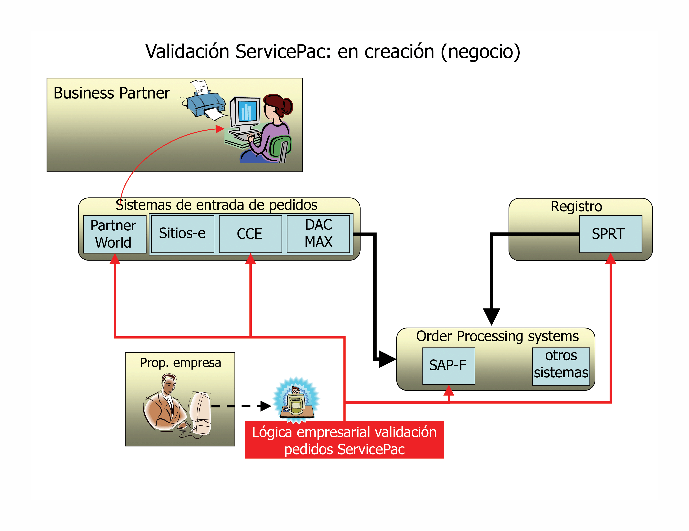
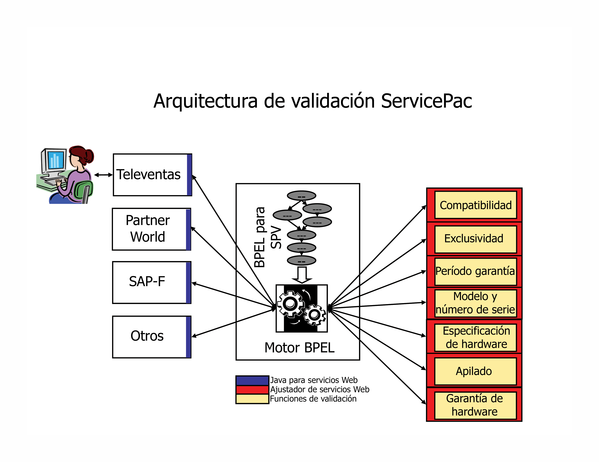
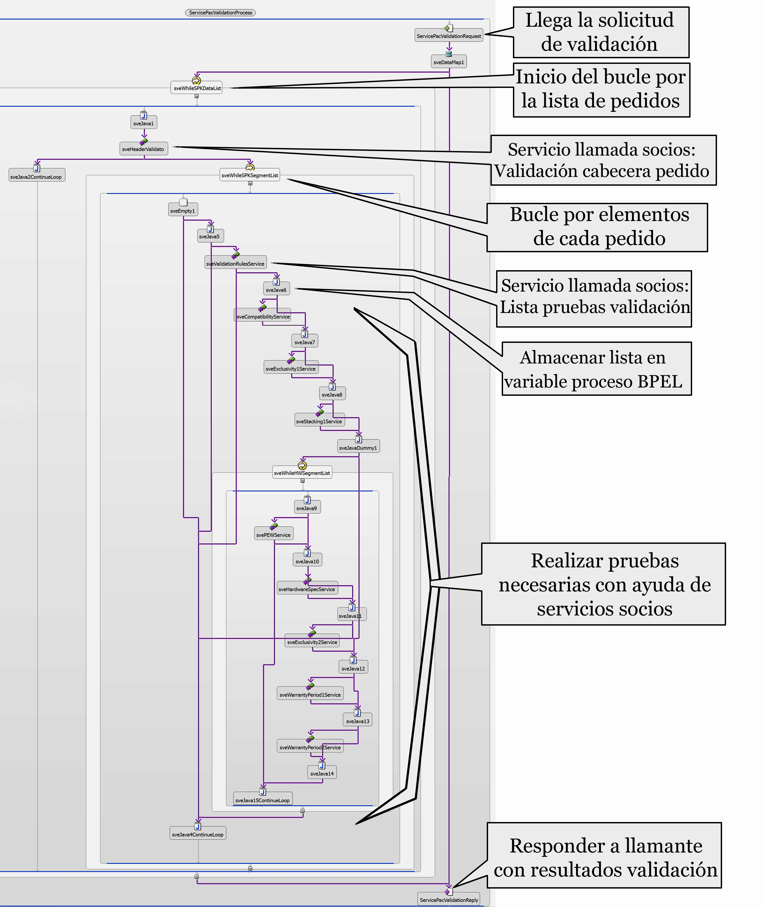

Introducción
Esta página describe una aplicación que se crea con coreografía basada en BPEL en un estilo de arquitectura orientada a
servicios. Las lecciones aprendidas durante las fases de diseño y desarrollo de este proyecto proporcionan conocimiento
general para otras que tengan en cuenta el uso de la coreografía basada en BPEL en una arquitectura orientada a
servicios. La propuesta de diseño se evalúa aquí usando una comparación de pros y contras que tiene en cuenta los
requisitos empresariales y los elementos de aplicación existentes. Esta página contiene recomendaciones de diseño e
identifica características que sugieren el uso de un enfoque controlado por BPEL.
Lecciones aprendidas
-
La selección de la segmentación correcta de la lógica empresarial entre el flujo de trabajo y los servicios de
socio constituye a veces un reto y siempre es importante.
La lógica empresarial se divide entre la coreografía basada en el flujo de trabajo y los servicios de socio. En
última instancia los servicios de socio deberían ser responsables de una lógica compleja o con una gran carga
computacional, mientras que la coreografía contendría la lógica que se anticipa al cambio en respuesta a
requisitos empresariales en constante evolución.
Como ésta no siempre es una separación clara, una estrategia de remediación útil es diseñar la aplicación para
que crezca mediante la modificación del flujo de trabajo y la agregación de nuevos servicios de socio en lugar
de mediante la modificación de los servicios de socio existentes.
Se trata de un enfoque fundamentalmente iterativo. Los prototipos iniciales probablemente necesiten la
refactorización de los servicios de socio para conseguir un diseño que crezca mediante la agregación de nuevos
servicios de socio.
Desde luego, en todos los casos debe conservar el código innecesario o que nunca cambia fuera del flujo de
trabajo
-
Aproveche las funciones únicas de BPEL
La posibilidad de BPEL de orquestar los servicios de socio que exhiben una gran variedad de vínculos
diferentes.
Tenga cuidado de no crear dependencias en las características de una implementación de socio o un vínculo de
servicio de socio específico. Si lo hace puede complicar o limitar futuros cambios en la coreografía o la
aplicación general.
Considere la posibilidad de conservar los resultados intermedios en variables BPEL como una estrategia para
mejorar el rendimiento
-
En las que sea posible diseñar servicios de socio de forma sin estado con operaciones idempotentes.
En el contexto de este debate, la idempotencia simplemente significa que se puede llamar a un servicio, con los
mismos datos de entrada, varias veces con la esperanza de que la respuesta sea correcta para cada llamada. Esta
característica puede ofrecer una importante simplificación tanto para el interlocutor como para el servicio, ya
que simplifica enormemente la interacción. La recuperación de errores, el reinicio tras anomalía y la escala de
agrupaciones en clúster se simplifican. Para el interlocutor, la recuperación de errores desde la red y los
problemas de cliente y servidor se simplifican. La idempotencia es un indicador clave para que se produzca una
coincidencia potencialmente buena en la coreografía BPEL de los servicios de socio.
Por supuesto, si se necesitan interacciones más complejas, los protocolos de servicios web incluyen funciones
de compensación que se pueden emplear en dichos casos. Si no ocurre ningún imprevisto y puede evitar dichos
requisitos en el diseño de la aplicación global, el resultado será más fácil de mantener y probar.
El caso de estudio
Este caso de estudio describe un proyecto de IBM para actualizar la tecnología de la información utilizada por su
empresa ServicePac®. El objetivo de este proyecto era aliviar puntos de dolor específicos y colocar la empresa
ServicePac® en continua expansión de volumen y funciones.
Como muchas empresas de éxito, ServicePac® de IBM ha pasado por una secuencia de transiciones incrementales, empezando
con la combinación de muchos programas de garantía distintos hasta llegar a tres empresas organizadas según el sector
geográfico. Posteriormente, se combinaron operaciones geográficamente distintas en una sola operación mundial. A lo
largo de los años, la empresa ServicePac® ha agregado continuamente nuevas ofertas como, por ejemplo, servicios de
instalación y ofertas para dar soporte a nuevo hardware de IBM. Aunque la empresa ServicePac® sea de por sí una sola
operación mundial, su producto, ServicePacs®, se vende en numerosos Business Partners y líneas de empresa de IBM. Cada
organización de venta tiene sus propios sistemas de entrada de pedidos adaptados a su línea específica de empresa (y no
a ServicePacs®). Estos sistemas representan un auténtico catálogo de tecnologías diferentes creadas en distintas épocas
por distintos equipos.
Los sistemas de entrada de pedidos que controlan los ServicePacs® deben realizar validaciones durante el tiempo de
entrada de los pedidos según los requisitos desarrollados por la empresa ServicePac®. La validación de ServicePac puede
ser compleja. ServicePacs® se ofrece en más de 100 países y las ofertas no son las mismas en todos sitios. Las ofertas
de ServicePac® varían dependiendo del modelo de producto, el país en el que se entregan, el canal de ventas, el sistema
de entrada de pedidos y la información específica del cliente, como los ServicePacs® que actualmente posee.
Tradicionalmente, la validación de pedidos de ServicePac® se ha llevado a cabo en el sistema de entrada de pedidos,
implementando sólo aquellos requisitos de validación que fuesen necesarios para los canales de ventas a los que de
soporte el sistema en cuestión. Como la empresa ServicePac® ha crecido, el coste de comunicar los requisitos de
validación y coordinar su desarrollo, prueba y despliegue se ha vuelto prohibitivamente caro. Además, la organización
de una validación de pedidos correcta en los sistemas de pedidos ha aumentado el plazo de comercialización de nuevas
ofertas.

Figura 1: enfoque orientado a servicios de la validación de pedidos de ServicePac®. El enfoque consiste
en poner a disposición de todos los sistemas de entrada de pedidos que procesen ServicePacs® un único servicio, en
lugar de colocar una lógica de validación específica en cada sistema de pedidos.
Un enfoque orientado a servicios para la validación
Pronto se hizo patente que la validación debía ser responsabilidad de la empresa ServicePac® y no de cada sistema de
ventas individual a través del cual se solicitasen los pedidos de ServicePacs®. Las dos opciones que se tuvieron en
cuenta fueron distribuir código que encapsulara los requisitos de validación de pedidos a todos los sistemas de pedidos
o proporcionar un servicio de validación de pedidos centralizado. Impedir problemas de administración asociados con el
enfoque de código distribuido era un importante controlador para seleccionar el enfoque de servicio centralizado.
La mayor y única ventaja de incluir la validación de pedidos como un servicio para sistemas de entrada de pedidos es
que éstos ya no necesitarán implementar, probar o ejecutar localmente su propia lógica de validación de pedidos de
ServicePac®. Quizás la mayor preocupación (o miedo) proceda de los muchos propietarios de sistemas de entrada de
pedidos que tienen ahora una nueva dependencia de tiempo de ejecución en un sistema externo usado por otra
organización. Tal como verá a continuación, el beneficio neto de ofrecer la lógica de validación como servicio supera
en este caso a los problemas.
A continuación encontrará un rápido resumen de los objetivos de arquitectura del proyecto:
-
Diseño de interfaz: La interfaz de validación debe estar diseñada para controlar correctamente la
evolución anticipada de la empresa (por ejemplo, las nuevas ofertas de productos no deberían normalmente requerir
modificaciones de interfaz)
-
Independencia del protocolo de mensajería: El servicio de validación debería ser accesible
independientemente de la plataforma de llamada, el modelo de programación, la capa de transporte de red o las
opciones de hardware.
-
Agilidad empresarial: La lógica de validación se implementó para hacer que los cambios
empresariales anticipados fuesen seguros, baratos y rápidos, sin por ello sacrificar el rendimiento y la fiabilidad
ni poner en peligro las reglas de diseño fundamentales.
-
Escalabilidad: La escala a rendimientos más altos debería no implicar reprogramación o pruebas
funcionales importantes.
Diseño de la interfaz
Trabajando con el propietario de la empresa y los arquitectos empresariales de todas las partes que gestionan la
nomenclatura del producto, se desarrolló una taxonomía autoconsistente y bien documentada para los productos actuales y
anticipados. Según la taxonomía, se desarrolló un modelo de datos XML descrito en el lenguaje de esquema XML que
expresa todos los tipos de producto necesarios junto con sus atributos. Cuando se ofrecen los nuevos productos, la
taxonomía puede cambiar; junto con los cambios de esquema potenciales, no obstante, se espera que el formato de mensaje
real permanezca sin cambiar mientras las nuevas ofertas caen con el ámbito de la taxonomía definida.
Este enfoque ofrece a la empresa la flexibilidad deseada para introducir de forma rápida y barata nuevas ofertas. Por
supuesto, no cubre todos los casos posibles. Por ejemplo, si una nueva oferta de producto tiene una condición previa
que no se ha anticipado en las definiciones de mensaje existentes, las nuevas definiciones de mensaje deberán colocarse
en su sitio.
En el listado 1, se muestra la carga de un mensaje de solicitud de validación simple que incluye un único pedido de un
solo ServicePac® para un sistema propiedad del cliente identificado por su número de pieza y su número de serie. El
formato de mensaje da soporte a varios pedidos para varios ServicePacs® que podrían estar asociados con hardware nuevo
y hardware existente. En algunos casos, los mensajes pueden tener miles de elementos anidados.
Independencia del protocolo de mensajería
Una de las grandes ventajas de usar BPEL es que las relaciones de mensajería entre los servicios se describen de forma
abstracta en WSDL, lo que proporciona un grado de independencia del protocolo de mensajería. Para aprovechar al máximo
este dispositivo, uno debe evitar totalmente crear implementaciones que dependan de características específicas del
protocolo de mensajería que se utiliza durante el desarrollo. Por ejemplo, si se utilizan vínculos de EJB durante el
desarrollo, el estilo de programación puede producir pequeños intercambios de mensajes disparejos (por ejemplo,
intercambio frecuente de pequeños mensajes). Si, posteriormente, el vínculo se cambia a JMS o SOAP sobre HTTP, es
probable que se produzca un grave atasco de rendimiento como resultado de una mayor sobrecarga por mensaje en estos
protocolos. En este caso, el impacto de moverse entre vínculos se puede reducir siguiendo un estilo de programación en
el que los intercambios de mensajes tengan mayor granularidad (por ejemplo, intercambios relativamente infrecuentes de
cuerpos de mensaje más grandes), para que la sobrecarga de creación y recepción de mensajes se pueda amortizar con más
datos.
<?xml version="1.0" encoding="UTF-8"?>
<spkOrderDataList>
<header>
<orderReference>1040-5124-001</orderReference>
<orderDate>2004-08-15</orderDate>
<orderingSystem>WEB</orderingSystem>
<country>US</country>
<distributionChannel>A</distributionChannel>
<headerReturnCode/>
</header>
<spkSegmentList>
<orderItemReference>102</orderItemReference>
<spkPartNumber>69P9921</spkPartNumber>
<spkType>WMAINTOPT</spkType>
<spkQuantity>1</spkQuantity>
<hardwareQuantity>1</hardwareQuantity>
<spkReturnCode/>
<hardwareSegment>
<serialNumber>77X9182</serialNumber>
<hardwareIdentifier>8676M2X</hardwareIdentifier>
<hardwareReturnCode/>
</hardwareSegment>
</spkSegmentList>
</spkOrderDataList>
</ServicePacData:validationRequest>
|
Listado 1 - Ejemplo de mensaje sencillo recibido por el servicio de validación compuesto de un único pedido de un solo
ServicePac® que se aplicará a un sistema existente identificado mediante su número de pieza y su número de serie. El
servicio de validación devuelve el mensaje recibido anotado con códigos de verificación o códigos de error. El
componente de la invocación puede proporcionar sus propios números de referencia para permitirle correlacionar la
solicitud y la respuesta.
Otro hecho que debe tenerse en cuenta en la independencia del protocolo es el estilo de mensaje. En este proyecto las
necesidades futuras de mensajería asíncrona se solucionan creando definiciones de mensaje de validación con un campo
(actualmente sin explotar) para correlacionar mensajes de solicitud y respuesta, aunque todo el uso actual sea síncrono
y, por lo tanto, no necesite correlación. La solución de tales problemas abarca normalmente el diseño de mensajes y el
diseño de aplicaciones.
Agilidad empresarial
Fundamentalmente, el servicio de validación de ServicePac® acepta un pedido y devuelve información sobre si el pedido
es válido o no, y si no es válido, por qué no lo es. Sin embargo, la clave consiste en minimizar el impacto de volver a
diseñar, probar y ejecutar cuando se necesita hacer modificaciones en respuesta a nuevos requisitos empresariales. Por
supuesto, resulta útil tener una idea de cuáles serán probablemente los nuevos requisitos al diseñar la implementación
inicial.
Detalles iniciales de implementación:
El servicio de validación extrae la información detallada del pedido de ServicePac®, consistente en: tipos de
ServicePac®, hardware al que debe aplicarse, ubicación de entrega (país) del ServicePac®, canal de ventas y datos del
cliente. La lógica empresarial coteja entonces la información del pedido con un conjunto de declaraciones suministradas
por la empresa ServicePac®. El conjunto de pruebas que debe aplicarse a un pedido depende de los detalles del pedido.
Algunas pruebas requieren acceso a datos adicionales que sólo están disponibles desde sistemas remotos.
Existen tres tipos de datos necesarios para validar un pedido: datos de referencia propiedad de esta aplicación, datos
de referencia almacenados en la memoria caché propiedad de otros sistemas, y datos reales que deben obtenerse de otros
sistemas cada vez que se valida un pedido.
A los datos de referencia propiedad de esta aplicación se accede a través de un servicio de socio creado como parte de
esta aplicación. Este servicio también se encuentra disponible en otras aplicaciones que necesitan acceder a los datos
de referencia propiedad de esta aplicación.
Los datos de referencia propiedad de otras aplicaciones se suministran accediendo a un servicio de socio creado como
parte de esta aplicación. Siempre que puede, el servicio de socio almacena en la memoria caché los datos obtenidos de
la otra aplicación para minimizar el número de accesos de red. Al ubicar la estrategia de almacenado en memoria caché
dentro del servicio de socio, podrá cambiarse cuando sea necesario y en cualquier momento sin que sea necesario
realizar ningún cambio en el resto de la aplicación.
Los datos y los resultados intermedios que sólo deben almacenarse durante el ciclo vital de una solicitud de validación
se almacenan en variables BPEL. El uso de variables BPEL elimina la sobrecarga de accesos evitables a servicios de
socio y, por lo tanto, puede mejorar el rendimiento global.

Figura 2: vista topológica de la implementación controlada por flujo de trabajo de la lógica
empresarial que selecciona cuáles de las pruebas con gran carga computacional o datos intensivos deben realizarse para
validar un determinado pedido. Todos los sistemas de entrada de pedidos que necesiten validar pedidos usan la misma
interfaz de servicio.
En este punto pasamos a investigar la naturaleza de los nuevos requisitos que se pueden anticipar a partir de
discusiones con la empresa y observando las tendencias históricas.
A medida que la empresa ServicePac® se expande, se crean nuevas pruebas empresariales de validación de ServicePac®; no
obstante, no se espera que las pruebas existentes cambien. La validación de nuevos productos requiere la evaluación de
una nueva agrupación de pruebas existentes y posiblemente nuevas.
Este conjunto de requisitos es un hallazgo para sistemas controlados por flujo de trabajo en los que el flujo de
trabajo se utilice para unir conjuntos de pruebas necesarios para cada tipo de producto. Los aspectos de las pruebas
con gran carga computacional o de datos intensivos podrán desarrollarse en tecnología menos flexible pero más eficaz y
presentarse como servicios de socio disponibles para el motor de flujo de trabajo central, tal como se muestra en la
figura 2.
Cuando se agregan nuevas ofertas empresariales al sistema de validación, se modifica el flujo de trabajo para poder
acceder a los servicios de socio existentes (y a los servicios de socio posiblemente nuevos necesarios para dar soporte
a la nueva oferta). Suponiendo que los servicios de socio se hayan segmentado correctamente al principio, esta
arquitectura exhibe un modo aditivo muy atractivo en el que los nuevos requisitos no necesitarán mucha reaprobación ni
recodificación de la función anteriormente implementada.
Escalabilidad
Como la aplicación BPEL se despliega en una pila de middleware madura que ofrece agrupación en clúster como opción de
configuración, resultaba sencillo mover el proyecto de validación de ServicePac® a una base que se pueda fácilmente
escalar agregando nuevo hardware cuando sea necesario. Por supuesto, la arquitectura global de invocación a los
servicios de socio desde un motor de flujo de trabajo encaja perfectamente en el modelo de agrupación en clúster.
Como punto característico, este servicio es idempotente ya que las llamadas a este servicio no tienen efectos
colaterales detectables por el interlocutor. Por consiguiente, si una llamada de servicio devuelve un error o no se
puede realizar, no será necesario que el cliente de servicio tome ninguna acción de recuperación de errores. En
realidad, el cliente de servicio puede, de forma segura, reintentar hacer una llamada en cualquier momento. El hecho de
que los servicios de socio también sean idempotentes simplifica enormemente los factores asociados con la escala del
proceso mediante agrupación en clúster, ya que la recuperación de errores es relativamente simple y la recuperación y
el reinicio tras una anomalía sencillos. Además, no será necesaria la "afinidad del interlocutor", ya que cada
interacción es atómica y no existe ningún almacenamiento en caché específico del interlocutor asociado con el
procesamiento de una solicitud.
La aplicación de flujo de trabajo y BPEL
BPEL4WS (Business Process Execution Language for Web Services) es un modelo de lenguaje y programación específicamente
diseñado para ejecutar lógica empresarial basada en flujo de trabajo que implique coreografía de los servicios web.
BPEL es un estándar abierto para muchas implementaciones de proveedor de herramientas de montaje y tiempos de trabajo.
La posibilidad de describir el proceso empresarial de ServicePac® a través de un diagrama de proceso esquemático y, a
continuación, representar la lógica de la implementación usando los estándares basados en constructos BPEL4WS suponía
la combinación perfecta de flexibilidad y aislamiento para implementar una lógica empresarial de ServicePac® flexible.
Para este proyecto, elegimos IBM WebSphere Application Developer Integration Edition (WSADIE) como entorno de montaje.
Los artefactos de código desarrollados estaban destinados a ejecutarse en el tiempo de ejecución de IBM WebSphere®
Business Integration Server Foundation v5.1.1, que proporciona un motor de ejecución de procesos empresariales para
ejecutar posteriormente el flujo de trabajo. Los datos se alojan en un servidor DB2 (v8.1).
Las pruebas individuales necesarias para la validación de ServicePac® se implementaban como Enterprise Java Beans, en
concreto como beans de sesión sin estado, que se ejecutaban en el contenedor EJB de WebSphere® Application Server. Las
herramientas de WSADIE facilitaban la integración de estos EJB como servicios web a través de la generación automática
de archivos WSDL. Como consecuencia, las pruebas individuales se pueden desplegar dentro del mismo contenedor como
proceso BPEL, o en contenedores dedicados de otras instancias de servidor.

La figura 3 muestra una vista del editor BPEL de gráficos del flujo de trabajo de validación. La
herramienta da soporte a la contracción de subprocesos y bucles para simplificar el trabajo en la información detallada
de piezas individuales del flujo de trabajo global.
La figura 3 muestra el proceso BPEL completamente ampliado que se utiliza para controlar los servicios de validación de
ServicePac® tal como aparece en la herramienta de creación y edición WSADIE BPEL.
Se realizaron importantes mejoras de rendimiento cuando se modificó una implementación anterior del proceso de flujo de
trabajo de validación de ServicePac® para aprovechar el uso de variables BPEL y mantener los resultados intermediarios
en lugar de realizar llamadas adicionales al servicio de socio. Puede ver un ejemplo de este enfoque en la figura 3; en
él, la lista de pruebas que se vaya a realizar en cada elemento de un pedido se conserva en una variable BPEL.
Pros y contras globales del diseño
|
Pros
|
Contras
|
|
1. Agregación de nuevas ofertas de forma más rápida y menos cara
2. La agregación de nuevos sistemas de pedidos es menos cara
3. Validación global coherente
4. El uso del servicio de validación se puede realizar escalonadamente a medida que se actualizan los
sistemas de pedidos
5. La nueva lógica de validación sólo necesita implementarse y probarse en un sitio.
6. La lógica de validación es propiedad de la empresa ServicePac® y no se distribuye en varios
sistemas extranjeros.
|
1. Dependencias entre organizaciones de tiempos de ejecución adicionales
2. Sobrecarga de rendimiento en forma de latencia de red adicional
3. Necesita transformación de los sistemas existentes
4. Se ha creado un nuevo componente centralizado que puede actuar potencialmente como único punto de
anomalía para varias aplicaciones.
|
En el caso de la aplicación ServicePac®, las ventajas descritas anteriormente parecieron ofrecer un valor significativo
y los contras eran todos contenibles. Como a los interlocutores individuales se les permite la validación privada
continua hasta que pasan a una actualización programada que cubra muchos problemas, el trabajo de programación
adicional de empaquetar los datos para una llamada de validación es un pequeño incremento que se puede contener en el
ámbito global del proyecto de la aplicación de llamada. Con aquellos servicios en línea que tienen requisitos de tiempo
de respuesta que no pueden ser satisfechos por el servicio de validación, el interlocutor puede realizar validación
preliminar en línea (con un único acceso de validación final al servicio de validación). Esta estrategia conserva los
factores humanos de la aplicación de llamada mientras, al mismo tiempo, conserva la integridad de todo el proceso de
solicitud de pedidos de ServicePac®. En algunos sistemas existentes que no albergan la posibilidad de protocolo de
servicios web internos, se creó un convertidor que acepta un protocolo privado y lo convierte en una llamada de
servicios web (se creó un documento específico del proveedor en el adaptador de servicios web para uno de los
interlocutores de este proyecto). La prueba y demostración de la solidez del servicio ha disipado el miedo a atascos de
rendimiento presentados por el servicio de validación. Mediante el uso de tecnología de agrupación en clúster, se puede
aumentar el rendimiento del servicio muy rápidamente en casos necesarios. Por último, si no ocurre ningún imprevisto,
la concentración de la lógica de validación en una sola implementación significa que el dinero que se gastaría en
desplegar y probar varias implementaciones independientes se puede gastar en probar y desplegar una sola implementación
que pensamos que hará más por compensar los problemas asociados con tener un solo punto de anomalía adicional para
muchos sistemas de entrada de pedidos distintos.
Por último, la posibilidad de que la empresa se apropie realmente de los requisitos de validación y de su
implementación, para extender rápidamente nuevas ofertas, y para asegurar la validación de pedidos coherente y correcta
al principio del proceso de solicitud de pedidos, ha conferido poderes a la empresa para que se enfrente a nuevas
oportunidades que anteriormente resultaban técnicamente irrealizables o prohibitivamente caras.
|